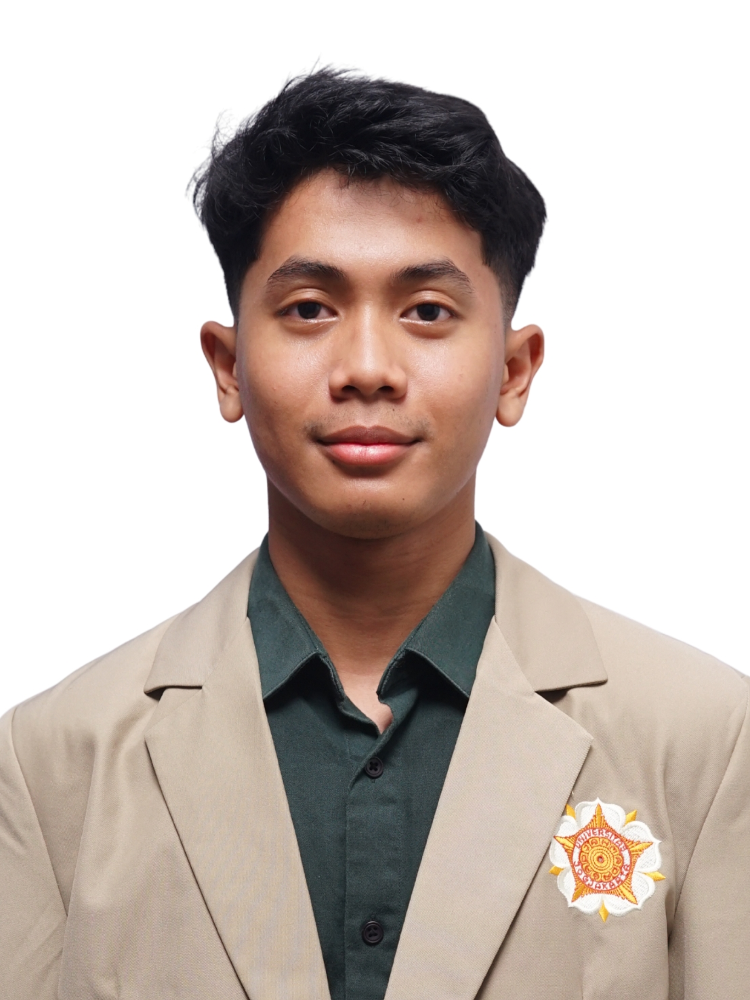

M. Naufal Renanza
Mahasiswa Teknologi Rekayasa Elektro UGM yang tertarik pada energi terbarukan, elektronika, dan pemrograman.
Tentang Saya
Saya mahasiswa tahun pertama program studi Teknologi Rekayasa Elektro di Universitas Gadjah Mada Angkatan 2026 yang memiliki minat kuat di bidang energi terbarukan, elektronika dan pemograman. Saat ini, saya tengah mengembangkan pengetahuan dan keterampilan teknis, sembari memperkuat kemampuan dalam pemecahan masalah, adaptabilitas dan kerja sama tim. Saya termotivasi untuk terus belajar, berkonstribusi dalam proyek-proyek yang bermakna, serta menerapkan ilmu yang dimiliki untuk mendukung terciptanya solusi yang inovatif dan berkelanjutan.
Pendidikan
Sarjana Terapan Teknologi Rekayasa Elektro
SMA Negeri 03 Palembang
Skill
Teknis
- Microsoft Word
- Microsoft Excel
- Canva
- Python
Non-teknis
- Kerja sama tim
- Komunikasi
- Manajemen waktu
Proyek dan Pengalaman
KMTEDI SV UGM
Sebagai staf Divisi Pengembangan Sumber Daya Manusia (PSDM) KMTEDI, saya memulai pengalaman berorganisasi pertama sejak memasuki dunia perkuliahan. Pengalaman ini menjadi kesempatan bagi saya untuk mengembangkan keterampilan komunikasi, kerja sama tim, kepemimpinan, dan pemecahan masalah, sekaligus berkontribusi dalam pengembangan mahasiswa.
INTO UGM 2027
Menjadi Staff Materi dari INTO UGM 2027 yang bertugas untuk merancang dan menyusun informasi yang diperlukan untuk kegiatan sosialisasi ke sekolah-sekolah, menjalin kerja sama untuk pelaksanaan Try-Out dan menyiapkan materi untuk kegiatan University Fair.
Forum Anak Kota Palembang
Menjadi bagian dari kepengurusan Forum Anak Kota Palembang yang aktif di kluster Hak Sipil dan Kebebasan yang program kerjanya menampung aspirasi anak dan mensosialisasikan mengenai apa saja hak hak anak.
OSIS SMAN 3 Palembang
Menjabat sebagai Ketua Seksi Bidang 5 yang berfokus pada demokrasi, hak asasi manusia, pendidikan politik, lingkungan hidup, kepekaan sosial, dan toleransi di lingkungan sekolah. Memimpin pelaksanaan program kerja, termasuk peringatan hari nasional dan Hari Pahlawan melalui berbagai kegiatan dan perlombaan.